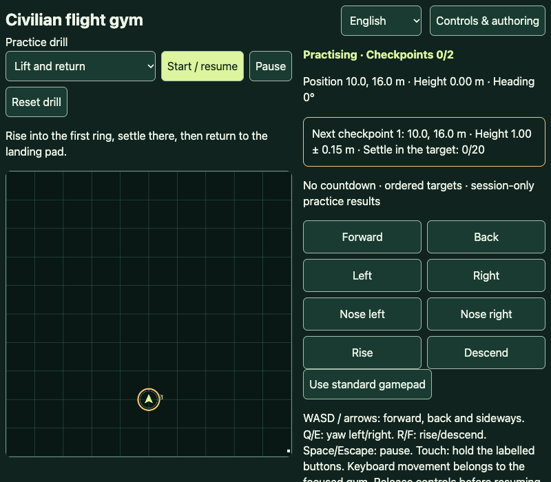

No unlocks, payment, or installation is needed to play online. Practice does not grant campaign wins. Choose an app in Flight practice, then select Play. It opens the published app in a new tab without arming a flight.
Use the app’s current Controls / Flight guide. Gym supports keyboard, touch buttons, and standard gamepad. In FPV apps select Keyboard, Touch · Mode 2, or USB radio. Radio setup detects axes and calibrates them; do not assume every gamepad is a radio. Keep controls neutral before starting. Use the in-app guide for the current bindings rather than relying on a second, possibly outdated mapping here.
Gym: select Lift and return, then Start / resume. Flight Studio: start with Lift and land, open Flight guide, and Watch example. World Studio: choose Watch first flight, then Try first flight. Choose self-level first; Acro does not automatically level when sticks return to centre. Arm / resume is always your explicit action. Follow the objective on screen, pause before changing setup, and use Reset / Retry for another attempt. Back to lobby returns to World Studio’s selection.

Choose Download for offline use on the launcher. You can also use the app’s Prepare offline action (Controls & authoring in Gym, Notebook in Flight Studio, Settings in World Studio). Leave the tab open. The download shows progress and Cancel; files are checked before the version is recorded. Thirty seconds without download activity or five minutes overall ends the attempt. A cancelled or failed new download leaves the previous prepared version intact.
Return to the stable launcher from the directory. Ready offline means the exact owning worker and every pinned dependency passed verification. Close all tabs, disable networking, and reopen that stable launcher to check on your device. A saved version name alone is not proof of readiness. Package guides and previews are included in the offline copy.
This is separate from downloading files. Use Add to home screen when the launcher offers it. Otherwise use the browser’s Install app menu; on iPhone/iPad use Share → Add to Home Screen. Availability depends on browser and platform. Online play works without either step.
The launcher announces Update available without reloading a flight. Open the new version when you are ready and prepare it offline. The previous prepared version remains linked for rollback. Updates to the launcher itself may need its tabs closed. Remove offline deletes only that version’s app-shell cache and worker, not flight records, radio profiles, or imported worlds. Use Remove this offline copy (keep records) on the launcher; use browser site settings only if you intend to remove all site data.
Export recordings, notebooks, playlists, and authored worlds with each app’s current export tools before clearing browser storage. Export is not automatic backup. Imported .rlpack files add content inside World Studio: they are not executable apps and cannot be installed in this directory.
Для гри онлайн не потрібні розблокування, оплата чи встановлення. Практика не дає перемог у кампанії. Виберіть застосунок у каталозі та натисніть Грати: він відкриється в новій вкладці без автоматичного запуску польоту.
Відкрийте чинний посібник із керування в застосунку. Тренажер підтримує клавіатуру, сенсорні кнопки та стандартний геймпад. У FPV виберіть клавіатуру, сенсорний режим Mode 2 або USB-пульт. Налаштування пульта визначає й калібрує осі: не кожен геймпад є пультом. Перед стартом поверніть керування в нейтраль. Актуальні клавіші дивіться саме у вбудованому посібнику.
У тренажері виберіть першу вправу підйому й повернення та Старт / продовжити. У Flight Studio відкрийте посібник і приклад першого зльоту та посадки. У World Studio виберіть перегляд першого польоту, потім спробуйте його. Починайте з автовирівнювання: в Acro нейтральні стіки не вирівнюють апарат. Запуск / продовження завжди потребує вашої дії. Виконуйте мету на екрані, призупиніть перед зміною налаштувань, а для нової спроби виберіть Скинути / Повторити. Повернення до лобі відкриває вибір польотів.
На сторінці запуску виберіть «Завантажити для роботи офлайн». Також можна скористатися підготовкою офлайн у застосунку: керування й авторство у тренажері, нотатник у Flight Studio або налаштування у World Studio. Не закривайте вкладку: показано поступ і скасування, а файли перевіряються. Спроба припиняється після 30 секунд без даних або п’яти хвилин загалом. Скасування чи помилка нової версії не видаляє попередню підготовлену.
Поверніться до стабільної сторінки запуску через каталог. Готово офлайн означає, що перевірено воркер-власник і всі потрібні файли. Закрийте всі вкладки, вимкніть мережу та знову відкрийте сторінку запуску. Сам запис назви версії не доводить готовності. Посібник і знімок входять до офлайн-копії.
Це окрема дія від завантаження файлів. Використайте кнопку встановлення, якщо вона доступна, або меню браузера. На iPhone/iPad: Поділитися → На початковий екран. Підтримка залежить від браузера. Онлайн можна грати без установлення.
Сторінка запуску повідомить про оновлення, але не перезавантажить політ. Відкрийте нову версію та підготуйте її офлайн, коли будете готові. Попередня залишається для повернення. Оновлення самої сторінки запуску інколи потребує закриття її вкладок. Видалення офлайн-копії прибирає лише оболонку цієї версії, не записи, профілі пульта чи імпортовані світи. Скористайтеся кнопкою видалення офлайн-копії зі збереженням записів на сторінці запуску; очищайте дані сайту лише якщо справді хочете видалити все.
Перед очищенням сховища експортуйте записи, нотатники, списки та авторські світи засобами застосунків. Автоматичної резервної копії немає. Файли .rlpack додають контент усередині World Studio, а не виконувані застосунки каталогу.